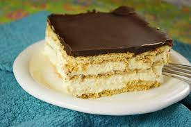

No-Bake Eclair

Chocolate graham crackers layered between creamy vanilla custard,
topped with chocolate glaze
Ingredients
- 2 (3oz) packages instant vanilla pudding mix
- 3 1/4 cups of milk
- 1 (8oz) container frozen whipped topping, thawed
- 1 (16oz) package chocolate graham crackers
- 1/3 cup unsweetened cocoa powder
- 1 cup of white sugar
- 2 tablespoons of butter
- 1 teaspoon of vanilla extract
Steps
- In a large bowl, combine pudding mix and 3 cups milk; mix well
- Fold in whipped topping and beat with mixer for 2 minutes
- In a buttered 9x13 inch baking dish, spread a layer of graham crackers on the bottom of the dish
- Spread 1/2 of the pudding mixture over crackers, then top with graham crackers
- Spread remaining pudding over crackers; top second pudding layer with another layer of crackers
- To make topping: In a medium saucepan over medium-high heat, combine 1/4 cup milk, cocoa and sugar and allow to boil for 1 minute
- Remove from heat and add butter and vanilla. Mix well and cool
- Pour sauce over graham cracker layer and refrigerate until set; serve
Return to Recipe page